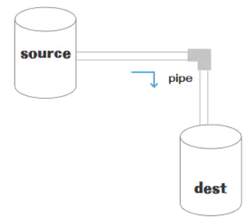
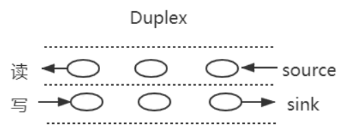
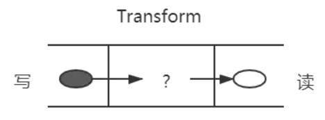

说说对 Node 中的 Stream 的理解？应用场景？
参考答案
一、是什么
流（Stream），是一个数据传输手段，是端到端信息交换的一种方式，而且是有顺序的,是逐块读取数据、处理内容，用于顺序读取输入或写入输出
Node.js中很多对象都实现了流，总之它是会冒数据（以 Buffer 为单位）
它的独特之处在于，它不像传统的程序那样一次将一个文件读入内存，而是逐块读取数据、处理其内容，而不是将其全部保存在内存中
流可以分成三部分：source、dest、pipe
在source和dest之间有一个连接的管道pipe,它的基本语法是source.pipe(dest)，source和dest就是通过pipe连接，让数据从source流向了dest，如下图所示：

二、种类
在NodeJS，几乎所有的地方都使用到了流的概念，分成四个种类：
- 可写流：可写入数据的流。例如 fs.createWriteStream() 可以使用流将数据写入文件
- 可读流： 可读取数据的流。例如fs.createReadStream() 可以从文件读取内容
- 双工流： 既可读又可写的流。例如 net.Socket
- 转换流： 可以在数据写入和读取时修改或转换数据的流。例如，在文件压缩操作中，可以向文件写入压缩数据，并从文件中读取解压数据
在NodeJS中HTTP服务器模块中，request 是可读流，response 是可写流。还有fs 模块，能同时处理可读和可写文件流
可读流和可写流都是单向的，比较容易理解，而另外两个是双向的
双工流
之前了解过websocket通信，是一个全双工通信，发送方和接受方都是各自独立的方法，发送和接收都没有任何关系
如下图所示：

基本代码如下：
const { Duplex } = require('stream');
const myDuplex = new Duplex({
read(size) {
// ...
},
write(chunk, encoding, callback) {
// ...
}
});双工流
双工流的演示图如下所示：

除了上述压缩包的例子，还比如一个 babel，把es6转换为，我们在左边写入 es6，从右边读取 es5
基本代码如下所示：
const { Transform } = require('stream');
const myTransform = new Transform({
transform(chunk, encoding, callback) {
// ...
}
});三、应用场景
stream的应用场景主要就是处理IO操作，而http请求和文件操作都属于IO操作
思想一下，如果一次IO操作过大，硬件的开销就过大，而将此次大的IO操作进行分段操作，让数据像水管一样流动，知道流动完成
常见的场景有：
- get请求返回文件给客户端
- 文件操作
- 一些打包工具的底层操作
get请求返回文件给客户端
使用stream流返回文件，res也是一个stream对象，通过pipe管道将文件数据返回
const server = http.createServer(function (req, res) {
const method = req.method; // 获取请求方法
if (method === 'GET') { // get 请求
const fileName = path.resolve(__dirname, 'data.txt');
let stream = fs.createReadStream(fileName);
stream.pipe(res); // 将 res 作为 stream 的 dest
}
});
server.listen(8000);文件操作
创建一个可读数据流readStream，一个可写数据流writeStream，通过pipe管道把数据流转过去
const fs = require('fs')
const path = require('path')
// 两个文件名
const fileName1 = path.resolve(__dirname, 'data.txt')
const fileName2 = path.resolve(__dirname, 'data-bak.txt')
// 读取文件的 stream 对象
const readStream = fs.createReadStream(fileName1)
// 写入文件的 stream 对象
const writeStream = fs.createWriteStream(fileName2)
// 通过 pipe执行拷贝，数据流转
readStream.pipe(writeStream)
// 数据读取完成监听，即拷贝完成
readStream.on('end', function () {
console.log('拷贝完成')
})
一些打包工具的底层操作
目前一些比较火的前端打包构建工具，都是通过node.js编写的，打包和构建的过程肯定是文件频繁操作的过程，离不来stream，如gulp
作答思路：
在Node.js中，Stream是一种用于处理流式数据的抽象，它可以以流的形式读取或写入数据。Stream可以是可读的、可写的，或者两者都是。
应用场景：
- 文件读写：使用Stream可以高效地读取或写入大文件，避免一次性将文件加载到内存中。
- 网络通信：在Node.js中，所有网络操作都是基于Stream进行的，如HTTP请求和响应。
- 流式数据处理：在处理大量数据时，可以使用Stream来分批次处理数据，而不是一次性处理所有数据。
- 实时数据传输：在需要实时传输数据的应用场景中，可以使用Stream来保证数据的实时性和高效性。
考察要点：
- Stream概念：理解Stream的基本原理和用途。
- 应用场景：了解Stream在Node.js中的典型应用场景。